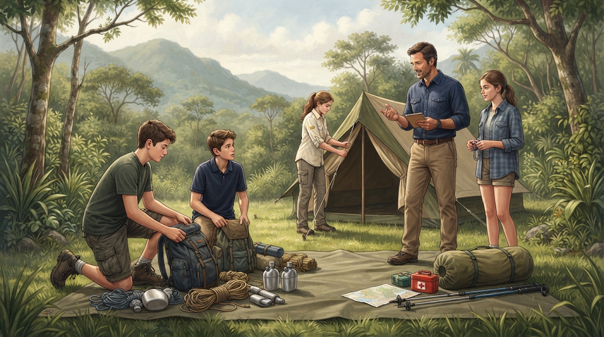
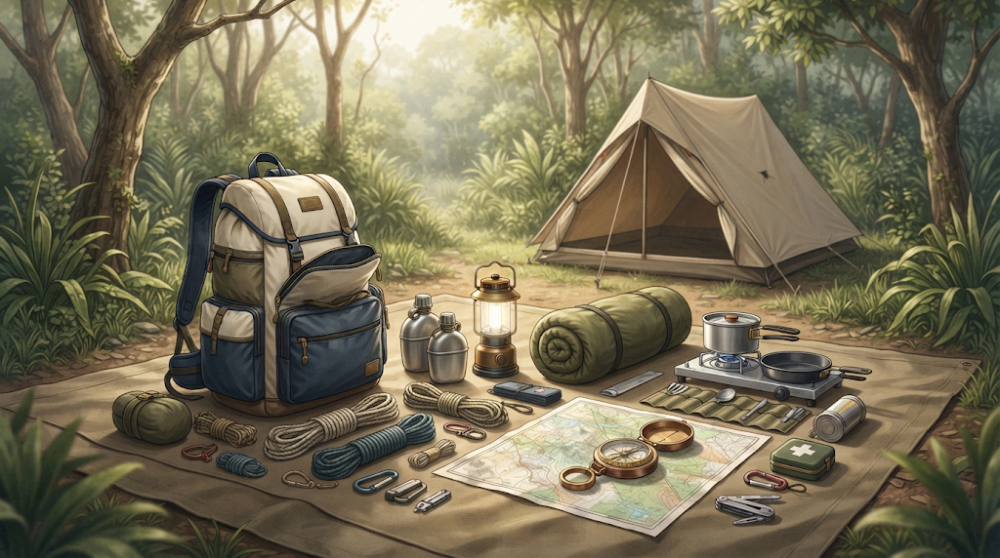
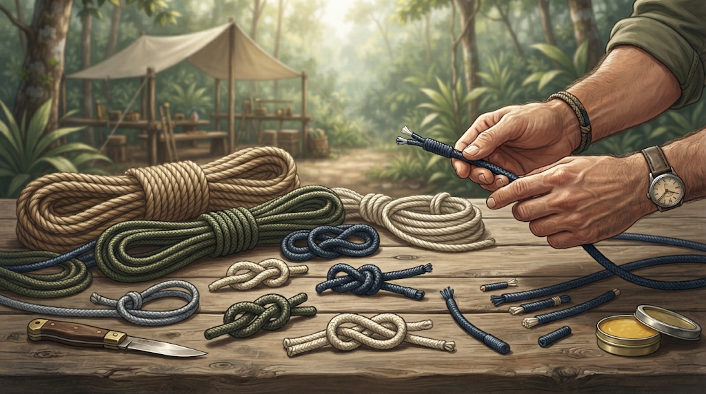
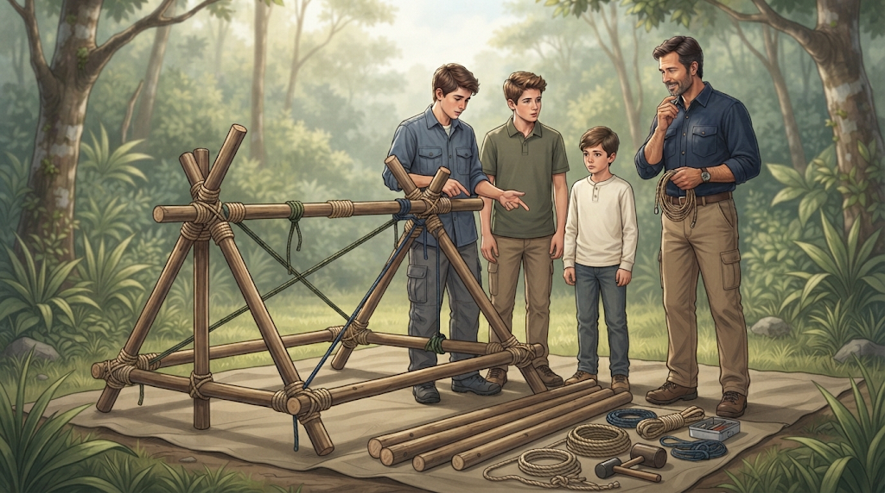
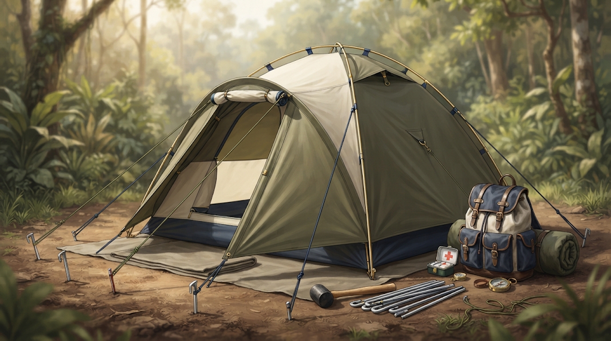
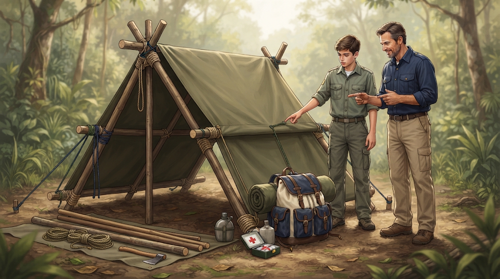
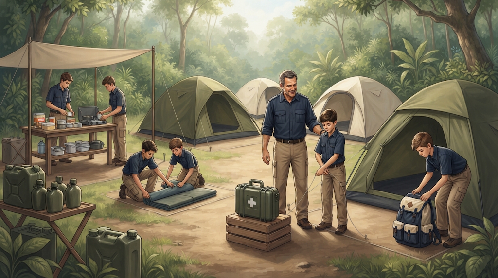

MÓDULO 01
Fundamentos da Arte de Acampar
Conheça os princípios, objetivos e fundamentos da vida em acampamento.
Acessar módulo →Embaixadores do Rei
A Arte de Acampar envolve planejamento, conhecimento dos equipamentos, domínio de técnicas e responsabilidade com o ambiente. Nesta escola virtual, os Embaixadores do Rei encontrarão conteúdos educativos, demonstrações visuais e atividades destinadas ao desenvolvimento de habilidades práticas.
Uma sequência de aprendizagem organizada do conhecimento fundamental à prática.

Conheça os princípios, objetivos e fundamentos da vida em acampamento.
Acessar módulo →
Identifique materiais, cordas, ferramentas e equipamentos de acampamento.
Acessar módulo →
Aprenda a identificar diferentes nós, suas finalidades e limitações.
Acessar módulo →
Conheça os princípios das amarras e suas aplicações em construções demonstrativas.
Acessar módulo →
Identifique componentes, preparação do terreno, montagem e fixação de barracas.
Acessar módulo →

Compreenda a organização do acampamento, prevenção de acidentes e proteção ambiental.
Acessar módulo →Compreender conceitos, fundamentos e finalidades.
Interpretar imagens, diagramas e demonstrações.
Acompanhar procedimentos tecnicamente validados.
Desenvolver habilidades sob supervisão adequada.
Avaliar conhecimentos e aprendizagens adquiridas.
Toda atividade prática deve respeitar os limites da técnica, as condições do ambiente e a faixa etária dos participantes, com supervisão adequada.